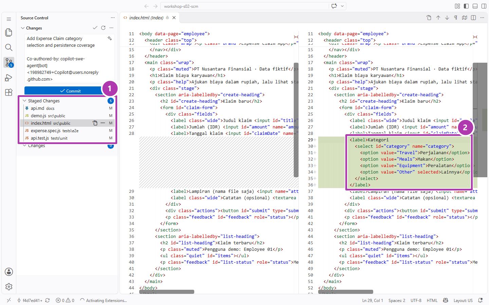
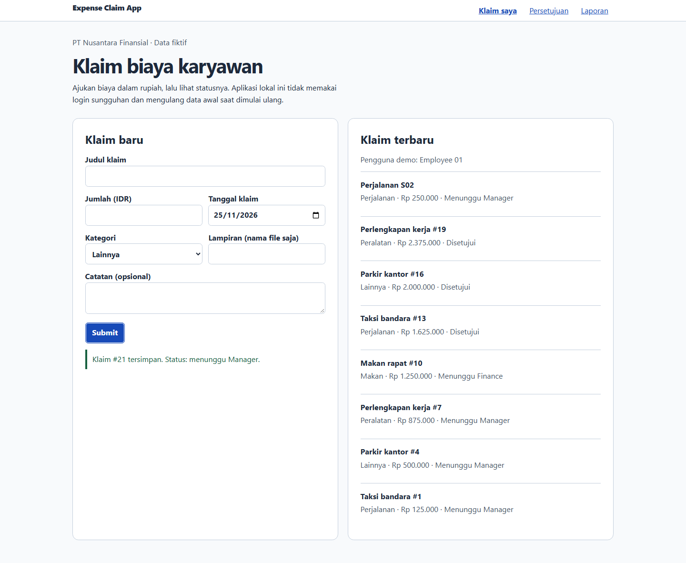
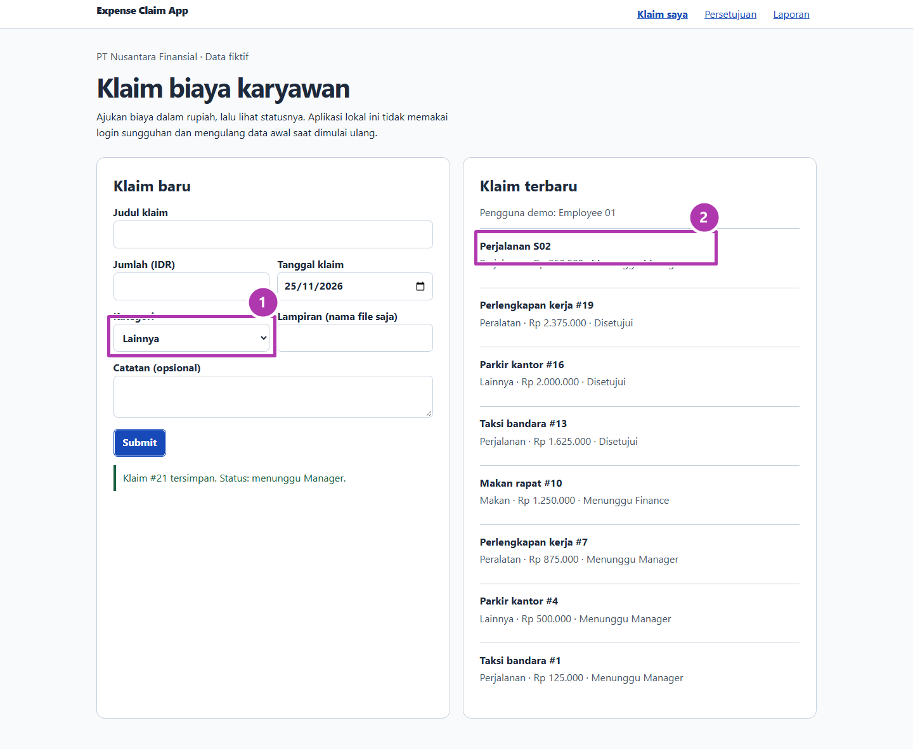
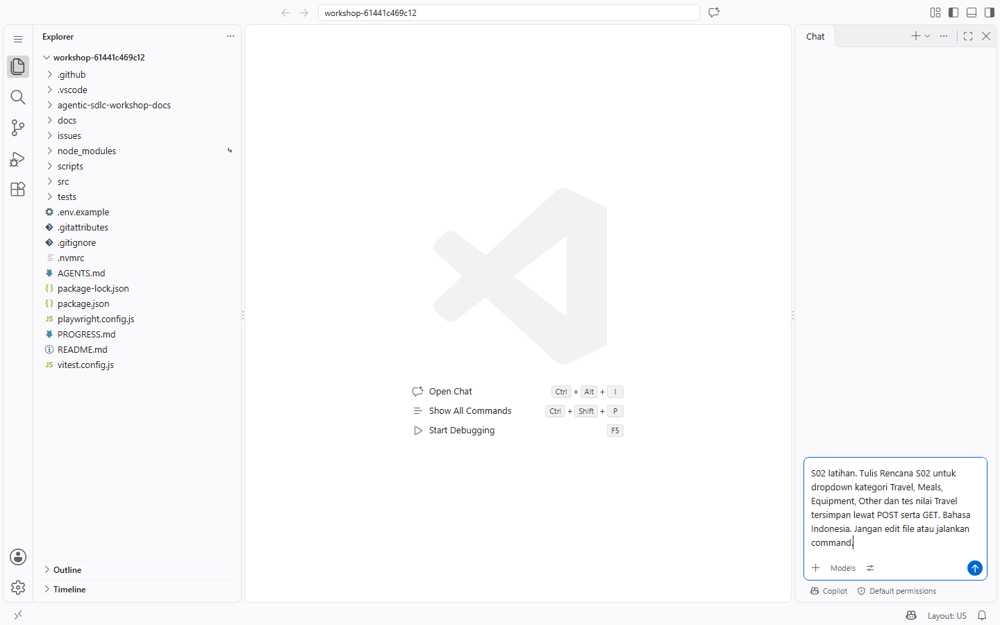

S02 · Level 1 — Inner loop
Ubah fitur di beberapa file
Minta Copilot Agent menelusuri pilihan kategori dari form ke API dan penyimpanan sebelum mengedit. Setelah perubahan dibuat di checkout latihan, kirim satu klaim taksi dan baca lagi detailnya: pilihan Perjalanan harus tersimpan sebagai Travel.
Status latihan: Rencana direkam di VS Code; implementasi kategori dan 25 tes unit diperiksa di draft PR #29.. Lihat diagram interaksi · Ikuti langkah · Cek hasil · Langkah live · Ulangi dari awal.
Masalah yang dihadapi
Di form Klaim baru, karyawan mengisi Taksi bandara, Rp250.000, dan tanggal hari ini. Belum ada pilihan kategori, jadi data yang dikirim ke server tidak membawa kategori dan klaim tersimpan sebagai Lainnya (Other). Bima ingin karyawan bisa memilih Perjalanan dan server menyimpannya sebagai Travel.
Kerugian: Kalau dropdown ditambahkan tetapi pilihannya tidak dikirim, form terlihat benar. Setelah klaim disetujui, laporan Finance masih memasukkan biaya taksi ke Lainnya.
Masalah pada baseline
src/public/index.html
Lihat potongan atau catatan sumber
Baseline: form tidak menampilkan kategori; API memberi default Other.Solusi dan alur
Minta Copilot Agent menelusuri pilihan kategori dari form ke API dan penyimpanan sebelum mengedit. Setelah perubahan dibuat di checkout latihan, kirim satu klaim taksi dan baca lagi detailnya: pilihan Perjalanan harus tersimpan sebagai Travel.
Alur kerja ringkas
Form klaimPilih Perjalanan
Hasil: Karyawan mengisi Taksi bandara Rp250.000. Form awal tidak punya kategori; versi baru mengirim Travel.
API dan SQLitePeriksa lalu simpan
Hasil: Server menyimpan Travel lewat kolom kategori yang sudah ada. Tidak perlu menambah kolom baru.
DeveloperBaca ulang kategori
Hasil: Saat detail klaim diminta lagi, nilainya Travel. Tes memastikan perubahan bukan sekadar dropdown yang terlihat di layar.
Diagram interaksi
Dari memilih Perjalanan sampai Travel tersimpan.
Kirim klaim taksi Rp250.000
-
KaryawanBrowser lokal keAPI ExpressAplikasi lokal
-
API ExpressAplikasi lokal keSQLiteDi proses aplikasi
-
SQLiteDi proses aplikasi keAPI ExpressAplikasi lokal
-
API ExpressAplikasi lokal keKaryawanBrowser lokal
Buktikan pilihannya benar-benar tersimpan
-
DeveloperTerminal / tes keAPI ExpressAplikasi lokal
-
API ExpressAplikasi lokal keDeveloperTerminal / tes
Langkah demo
Yang kamu lakukan
- Di VS Code, buka folder latihan dan pilih Chat → Agent. Minta Copilot merencanakan pilihan Perjalanan, Makan, Peralatan, dan Lainnya pada form klaim.
- Baca rencananya dulu: penyimpanan sudah punya kategori. Setelah setuju dengan rencana, minta perubahan hanya di folder latihan; buka Source Control → Changes untuk membaca file yang diubah.
- Kirim klaim Taksi bandara dengan kategori Perjalanan. Cek bahwa server menyimpan Travel, bukan hanya dropdown terlihat benar. Lihat hasil tes dari versi yang sama.
Issue adalah tiket kerja. PR (pull request) adalah usulan perubahan; jika masih draft, hasilnya belum digabung. Files changed atau Changes menunjukkan file yang berubah. Checks menunjukkan hasil tes otomatis.
Ikuti alur GitHub dari tiket sampai review jika latihanmu memakai PR. Tautan contoh di bawah hanya membuka hasil yang sudah ada.
Contoh dan cara cek hasilnya
Buka dua versi formulir
Jalankan dua versi latihan. Buka http://127.0.0.1:3000 untuk form awal tanpa kategori dan http://127.0.0.1:3001 untuk contoh yang sudah punya pilihan kategori. Isi Taksi bandara, Rp250.000, dan tanggal hari ini.
npm run demo:compare -- v1-app-clean Perbesar S02-before.png
Perbesar S02-before.pngv0-baseline · Form baseline terisi, tanpa field Kategori. Pilih Kategori → Perjalanan
Di versi :3001, nomor 1 menunjuk dropdown. Pilih Perjalanan (nilai Travel) dan klik Submit. Di baseline, klik Submit tanpa dropdown: POST menyimpan Other. Keduanya HTTP 201; GET /claims/:id membuktikan pilihan tersimpan.
npm run shots -- S02 Perbesar S02-after-annotated.png
Perbesar S02-after-annotated.pngv1-app-clean · dianotasi · Nomor 1 menandai pilihan Kategori (Perjalanan). Minta rencana sebelum mengedit
Di folder latihan terpisah, buka Chat → Agent. Minta rencana alur dari form sampai penyimpanan dan tes. Kolom kategori sudah tersedia, jadi tidak perlu merencanakan perubahan skema tanpa alasan.
Tulis rencana untuk kategori Travel, Meals, Equipment, dan Other. Cek form, data yang dikirim ke API, penyimpanan, dan tes. Jangan edit file dulu. Perbesar S02-local-result.png
Perbesar S02-local-result.pngOutput lokal yang dirender · bukan layar portal · Output pemeriksaan lokal S02: v0-baseline; v1-app-clean. Baca implementasi kategori di draft PR #29
Draft pull request #29 adalah usulan kode dropdown, bukan foto rencana di Chat. Di Files changed, cari pilihan kategori di form, data yang dikirim, dan tes. Perintah berikut menyiapkan folder latihan berisi versi yang diuji.
Lihat perubahan kategori di draft PR #29
git fetch origin copilot/add-category-selection-local-expense-claim npm run demo:compare -- 0d4637686c0b6fc95eef5c541eb2ac4190b46caa Perbesar S02-draft-files-annotated.png
Perbesar S02-draft-files-annotated.pngSumber GitHub · 1. Baca name=category dan opsi Travel. Cek demo.js meneruskan pilihan; draft tidak menambah skema baru. Baca rencana asli di VS Code Desktop
Di VS Code Desktop, kirim prompt pada checkout v0-baseline. Baca rencana sebelum mengedit: kolom category sudah ada, jadi tidak perlu migrasi. Kotak 1–4 menunjukkan judul sesi, keputusan skema, tes unit/API, dan tes browser. Foto ini bukan hasil implementasi.
Tulis Rencana S02 untuk dropdown kategori Travel, Meals, Equipment, Other dan tes nilai Travel melalui POST serta GET. Jangan edit file sebelum rencana diperiksa. Perbesar S02-01-agent-plan-annotated.png
Perbesar S02-01-agent-plan-annotated.pngPotongan screenshot nyata VS Code Desktop · rencana Agent S02 pada v0-baseline · 1. Baca judul sesi Workshop S02; bagian bawah menunjukkan jawaban Agent, bukan hanya input. · 2. SQLite dan API sudah menyimpan category; rencana tidak menambah migrasi. · 3. Tes unit dan API akan membandingkan Travel dan default Other. · 4. Tes browser akan memeriksa label setelah reload. Sesi ini berhenti di rencana; belum ada file atau tes yang dijalankan. Kenali perubahan form di Source Control
Di folder latihan yang sudah diverifikasi, buka Source Control → Changes atau Staged Changes. Pilih index.html lalu cek file yang mengirim kategori dan file tes. Perintah ini hanya merangkum perubahan yang sudah dipilih untuk disimpan.
git diff --cached --stat
Perbesar S02-02-files-changed-annotated.pngScreenshot nyata VS Code Web · clone lokal terisolasi, isi staging cocok dengan commit 0d46376 · 1. Baca lima Staged Changes: kontrak, form, payload, tes API dan e2e. Klik index.html untuk melihat diff. · 2. Di sebelah kanan, dropdown menambah Travel (Perjalanan), Meals, Equipment, dan Other. Ini perubahan actual draft #29 yang disiapkan ulang di clone lokal, bukan sesi native Agent yang membuat kode. Jalankan tes di terminal VS Code
Jalankan tes dari folder yang berisi kode draft PR #29 (commit 0d46376), bukan versi awal. Untuk perubahan UI, periksa juga tes browser. Keduanya harus membuktikan pilihan kategori bisa dikirim dan dibaca kembali.
npm test npm run e2e -- expense.spec.js Perbesar S02-03-tests-green-annotated.png
Perbesar S02-03-tests-green-annotated.pngTerminal PowerShell nyata di VS Code Web · draft #29 commit 0d46376 · 1. Jalankan npm test dari checkout yang benar. · 2. Baca Test Files 2 dan Tests 25 passed. · 3. Exit 0 menandakan tes unit selesai; ini bukan GitHub CI, dan tes browser diuji terpisah.

Cek hasil
Di form awal, klaim tanpa pilihan kategori tersimpan sebagai Other. Di draft PR #29, pilih Perjalanan; POST berhasil membuat klaim (201) dan GET mengembalikan Travel (200). Pada commit 0d46376, 25 tes unit dan empat tes browser lulus. Foto rencana tidak membuktikan kode sudah diubah.
Bukti latihan terverifikasi
Perbesar S02-03-tests-green-annotated.pngLangkah live
Prasyarat dan petunjuk pengambilan bukti
Untuk mengulang, minta Agent menulis rencana di checkout latihan terpisah. Bukti rencana dari v0-baseline berbeda dengan bukti file dan tes pada draft #29. Cek commit masing-masing sebelum menyimpulkan bahwa kode atau tes sudah berjalan.
Tidak ada target bukti live yang belum direkam.
Sebelum dan sesudah
Geser pembanding atau gunakan tombol panah pada kontrol. Kedua gambar bisa dibuka terpisah.

| Bagian | Sebelum | Sesudah / target |
|---|---|---|
| Perilaku | Form tidak punya kategori; POST menyimpan Other. | App bersih: pilih Perjalanan, lalu POST dan GET detail mengembalikan Travel. |
| Bukti visual | Ada tangkapan lokal. | Ada tangkapan lokal. |
| Keputusan | Peserta membaca keadaan awal. | Manusia memeriksa hasil sebelum meneruskan. |
Manfaat
- Bima bisa melihat apakah perubahan dari UI sampai tes lengkap.
Bukti dan sumber
Template issue S02 · Data latihan dan pengukuran.


Perbesar S02-draft-app.png

Perbesar S02-draft-app-annotated.png

Perbesar S02-vscode-agent-entry.png Perbesar S02-vscode-agent-entry-annotated.png
Perbesar S02-vscode-agent-entry-annotated.png Perbesar S02-03-tests-green.png
Perbesar S02-03-tests-green.png Perbesar S02-02-files-changed.png
Perbesar S02-02-files-changed.png Perbesar S02-01-agent-plan.png
Perbesar S02-01-agent-plan.pngBukti GitHub live
Draft #29 benar-benar mengubah form, payload, kontrak, dan tes. Skema lama sudah dapat menyimpan kategori.
 Perbesar S02-draft-files.pngPerbesar S02-draft-files-annotated.png
Perbesar S02-draft-files.pngPerbesar S02-draft-files-annotated.pngUlangi latihan
Berhenti dari terminal server dengan Ctrl+C; jalankan npm run demo:before lagi. Data demo kembali ke seed; tidak ada perubahan ke GitHub.
npm run reset
npm run demo:before